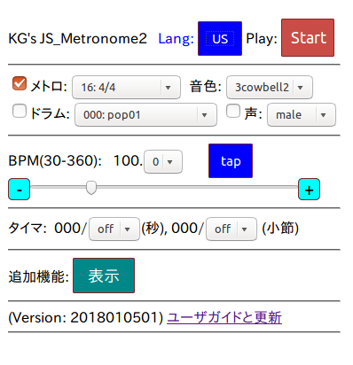
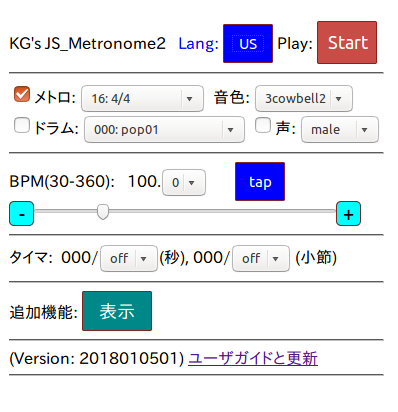

JavaScript メトロノームversion2 ユーザガイド(2018年1月から)
旧バージョンVersion 1
最新バージョン(完全オフライン、male threeの先頭をカット)、
その他バグ修正。
2020323(モジュール更新)
以下のスクリーンショット(左右どちらでも同じ)をクリックして
起動。
JPボタンを押すと日本語メニューに切り替わる。
 

まずは基本メニューだけで使ってみてください(拡張操作メニューは隠した)。
調子が悪くなったら、Webブラウザを閉じて終了してください。
スマートフォンの場合、ホーム画面に追加すると便利です。
バージョンアップした場合は、古いホーム画面のアイコンを消しましょう。
1. 概要説明
- 日本語マニュアルページ
- インストール操作不要
- 合計ダウンロードサイズ: 2MB 未満
- 起動後のネットワーク接続不要
- ただしiOSでは保存(cache)できないので、終了したら再アクセスが必要。
iOSでは、終了すると再アクセスが必要。
(20180125以後のバージョンではオフライン利用可能)
- 実行環境
- 確認済Webブラウザ: Firefox, MS Edge, Google Chrome, Safariなど
(JavaScript機能必須)
動作しなかったものMS IE(Win10)
- 確認済OS: Ubuntu(Linux、開発機器)、Android(SO02H)、
iOS 11(iPod中古)、Windows(Surface Pro3)、macOS(mac Mini最新OS)
- 特徴
- 普通のメトロノームの機能 (変拍子もどんどん追加)
- カウベルの組み合わせ中心にいくつかの音色を用意
- サンプル音源(自分のドラムセット)のグルーブ再生(最終的には200種以上)
- 音声カウント: one, two, ... eight (femaleは嘘、ピッチを上げただけ:-)
(femaleはgotsound.orgのfree sampleに入れ替え)
- テンポ調整: 小数点第1位まで (タップ、スライダー、+-ボタン)
- 練習用タイマ: 秒数または小節数
- 拡張コントロール(ドラマー向け):
ハネ具合調整、テンポ自動up/down、ランダム小節ミュート、偶数クリック音量下げ
- 複数セットリストの作成と編集 (プリセットパターン、ループ、bpm指定)
- プリセットパターンをつないだループ作成
- 省略した機能
- プリセットパターンの編集と追加
- ポリリズム
- クリックとドラムグルーブの同時再生 (拍合わせが面倒:-)
- その他、思いつかなかったもの
- このプログラムを書いた背景
- 仕事のためのJavaScriptのプログラミング練習
- アマチュアドラマーなのでドラマーのための機能を盛り込んだ。
- どのOSでも動くWebブラウザ内で実行できるプログラム、
ユーザ・インタフェースは専用アプリケーションには劣る。
- サポート(バグ修正) -- 自分で使いながら、2018年の夏くらいか
飽きるまでは直します。
- ソースコード(公開)
https://github.com/goto920/nodejs/のmetronome
次は、音楽再生時にクリックを追加するプログラム、メトロノームに合わせて
ドラム叩いて、正確さを判定するプログラムなど、を検討しています。
goto at kmgoto.jp